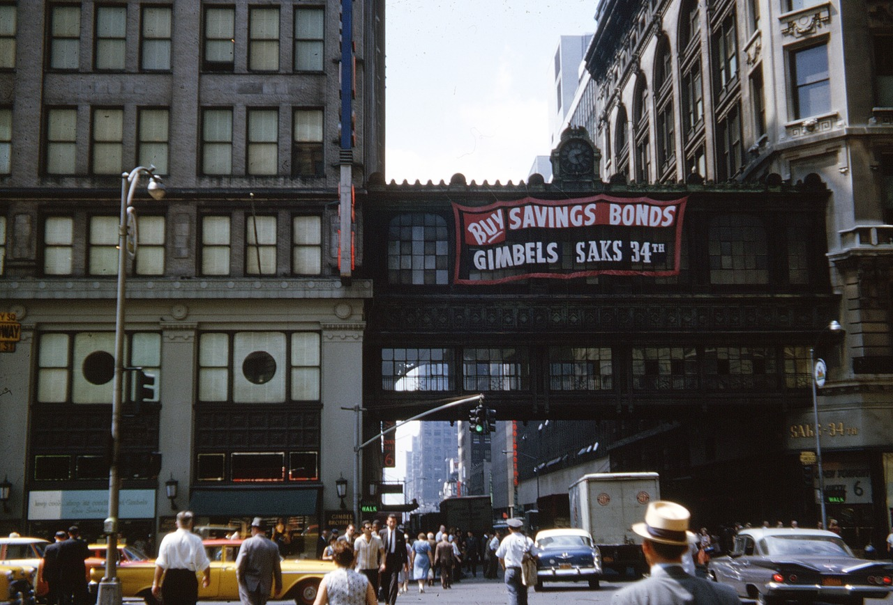

The 33rd Street bridge that connected the Gimbels and Saks department stores in Manhattan; photo circa 1960 from the defunct actionlog Flickr account. Gimbels is now the somewhat less distinguished Manhattan Mall.
The topic of aerial pedestrian bridges has gotten some interesting coverage from the New York Times, the Bowery Boys (check out their podcasts too), Forgotten NY, and others. The Bowery Boys article is particularly interesting, focusing on the 32nd Street bridge that still exists. The 33rd Street bridge was dismantled in 1966.